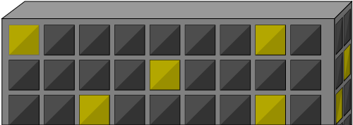

The initial inspiration for this game came from work I recently did
on the Robotic Mining Club's GUI for seeing where a robot was in a
field of specified size. This involved finding the x,y coordinates
of the robot's top left corner, properly rotating it to match the
angle received from telemetry, making sure the robot stayed within
the bounds of the field, and drawing fading tracks behind the robot
for its previous locations. At the start of working on this GUI I had
no experience whatsoever programming in JavaScript or even really
using HTML or CSS. That project initiated a steep learning curve for
me that I decided to continue by basing this project off of some of
the code I had struggled with behind it. Therefore, this project can
be broken up into 3 main parts; the animation and controls, the arena
specific setup, and the physics engine.
 I am no artist and
I hadn't really considered the difficulty in designing all of the
artwork for this project before hand. However, the artwork proved to
be a critical piece that aided the organization of the code powering it.
The two key components of the artwork are the passive background and
the interacting objects in the foreground. The background is drawn
on a separate HTML5 Canvas that is placed in z-space behind the main
canvas and only "interacts" with anything else in the environment by
moving at a slower pace than the foreground when the ninja reaches the
edge of the screen. Due to this, I created one large SVG image in Adobe
Illustrator to encompass the background. The foreground however is more
complex. Each object interacts with the ninja by checking for contact through
an collision detection function I created as part of the physics engine. Due to this,
each object had to be drawn separately and a rectangular bounding box around
the object is used to determine its bounds and whether any object collided with it.
In this way the animation of the ninja moving and maintaining contact with
the surface of the building is simply an illusion as the image source changes
(gifs aren't natively supported by JS in HTML5 Canvases so I used whats known
as a sprite sheet to manually switch the image shown after a certain amount of time)
if the left or right movement keys are pressed, but the length and width of
the object remains the same.
The next critical part of this project was level specific functionality.
My original idea for this game included it having 4 or 5 levels displaying
physics ideas such as spring force through a bungee jumping level, conservation
of momentum through a ninja on ice level, and various other things such as shooting
ninja stars or arrows at a target with added difficulties (all of which may
later come if I continue working on this project after). Due to this original
plan, my code is factored to support multiple levels and a single function with
object declarations is all that would be required to add more levels (I estimate
each additional level would take about 5ish hours). For the first level,
the office building, target, and ninja were all declared as new interacting
objects in the scene and the background was declared as a passive interacting
object. Then, things like a line connecting the ninja to the target were added
and the level's physics panel was created to contain certain pieces of information
depending on where the ninja was in the environment (ex. distance to
edge disappears if the ninja passes the right edge of the building in the x direction).
The last critical part of Physics of Ninja's was the physics engine itself. I originally
aimed at creating something known as a precision physics engine which calculates the interactions
and physics of everything in the scene based the newtonian forces applied by different
things in a scene. I created a 200 lines of code working beta of this type of
engine, however it proved to surpass the scope of this project by being too cumbersome,
slow, and complex to correctly handle a realtime environment. After realizing this,
I created a realtime physics engine which is based off of real physics (namely kinematics)
principles, but also utilizes shortcuts such as stopping the downward force
of gravity if an object is in contact with a surface, calculating interactions
through a bounding box instead of live edges of objects, and only checking
for interactions between objects when it is explicity told too in the main
program (if x,y of ninja are near x,y of object, check for contact). Although the
game physics uses shortcuts, I wanted all physics to accurately be shown
on the physics panel so I also created simulated x and y coordinates and velocities
that represented where the objects were in their environment instead of just
on screen. Besides displaying to the physics panel, this also allowed
me to use what I called a Pseudo Camera that made the ninja stop and the
background move instead if it came within 50 px of the edge of canvas.
Note: the animation above is actually a demonstration of the realtime physics engine
working with a randomly generated acceleration due to gravity and changing circles.